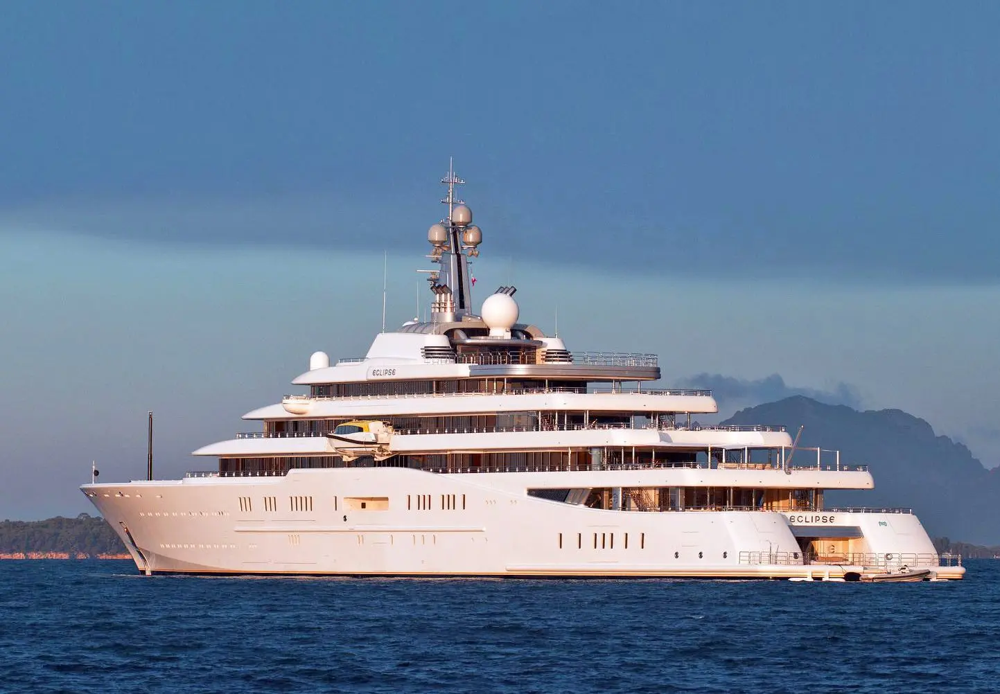
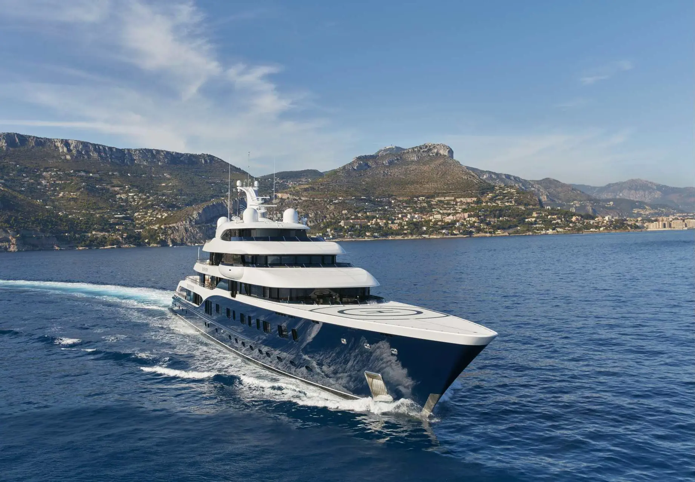

Yatch1
Eclipse, owned by Roman Abramovich

Built by: Blohm+Voss of Hamburg, with interiors and exteriors designed by Terence Disdale. Launched in 2009, it cost $500 million (the equivalent of £623 million today).
Owned by: Russian businessman Roman Abramovich, the owner of private investment company Millhouse LLC and owner of Chelsea Football Club. His current net worth is $17.4 billion.
Key features: 162.5 metres in length / 9 decks / Top speed of 22 knots / Two swimming pools / Disco hall / Mini submarine / 2 helicopter pads / 24 guest cabins
Back to Top
Yatch2
Symphony, owned by Bernard Arnault

Built by: Feadship, the fabled shipyard headquartered in Haarlem in The Netherlands. With an exterior designed by Tim Heywood, it reportedly cost around $150 million to construct.
Owned by: French billionaire businessman and art collector Bernard Arnault. Chairman and chief executive of LVMH, the world’s largest luxury goods company, his current net worth is $145.8 billion.
Key features: 101.5 metres in length / 6 decks / Top speed of 22 knots / 6-metre glass-bottom swimming pool / Outdoor cinema / Sundeck Jacuzzi / 8 guest cabins
Back to Top
Yatch3
Faith, owned by Michael Latifi

Built by: Similarly to Symphony above, also Feadship. With exteriors designed by Beaulieu-based RWD, and interiors by Chahan Design, it cost a reported $200 million to construct in 2017.
Owned by: Until recently, Canadian billionaire and part-owner of the Aston Martin Formula 1 Team, Lawrence Stroll. Recently sold to Michael Latifi, father of F1 star Nicholas, a fellow Canadian businessman with a net worth of just under $2 billion.
Key features: 97 metres in length / 9 guest cabins / Glass-bottom swimming pool — with bar / Bell 429 helicopter
Back to Top